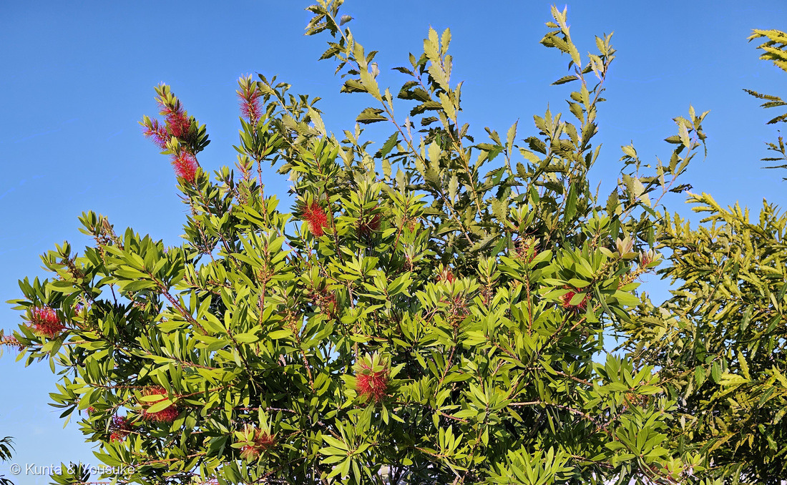
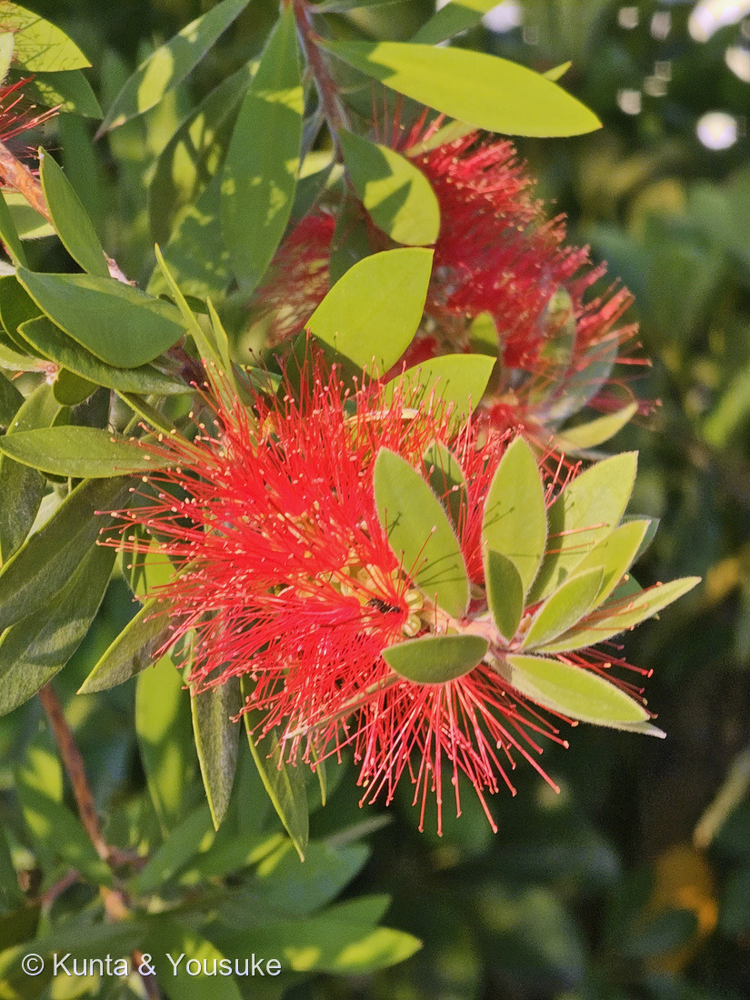
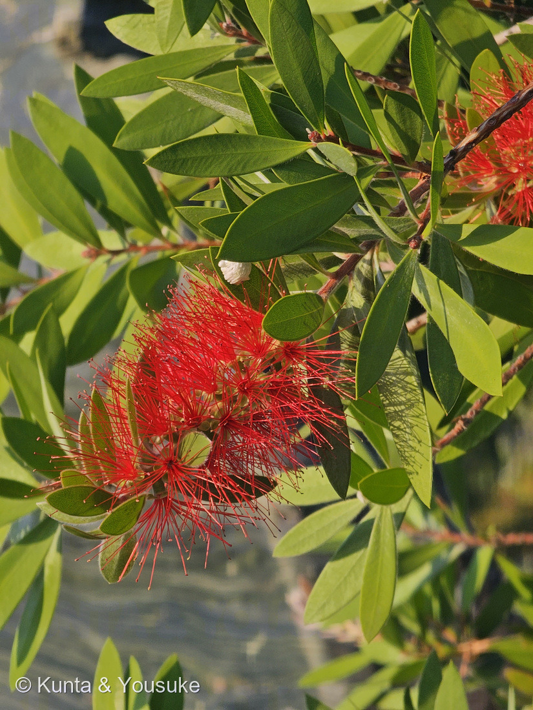
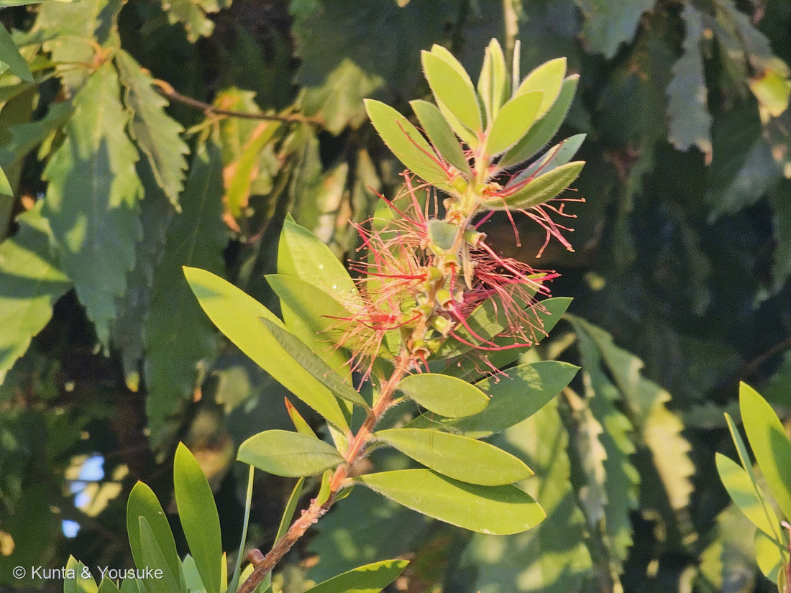

地図を読み込んでいるよ…
🔍 写真も地図も、押しているあいだ拡大して見られるよ（スマホは指を置いてすこし待ってね）。
🌍 の地図＝この子がもともと自生している場所を緑に。オーストラリア。ブラシノキ属はほとんどがオーストラリア原産で、C. speciosus は西オーストラリア州に自生する（三河の植物観察）。日本には観賞用に持ちこまれ、公園や街路の植えこみでよく見かける。
⭐オーストラリアの木だよ＝ブラシノキ属はほとんどがオーストラリア原産＝三河の植物観察は、この属の代表である Callistemon speciosus を「西オーストラリア州に自生」とする。⚠この株は種まで決められなかったので、地図は「ブラシノキ属ぜんたい」の分布だと思ってね（⭐275 アエオニウムと同じあつかい）。⭐⭐⭐そして、この緑でいちばん面白いのは、同じ写真の中にもうひとつ話があることかもしれない＝ぼくはこの写真の奥のギザギザの葉を見て「ヤマモガシ科のバンクシアだ」と書いてしまった――⚠でも燻太さんが「ブナの仲間かも」と教えてくれて、そのとおりだった。⭐⭐ヤマモガシ科はオーストラリアを代表する科で、ブナ科は北半球の科＝⭐地球の反対側の木どうしなのに、葉が見まちがえるほど似ているんだ（⭐本文の「二人とも同じ葉でまちがえた」の節を見てね）。⭐同じフトモモ科では211 レンブが東南アジア原産＝⭐⭐科は同じでも、ずいぶん遠いところで育った仲間だね。
⚠ 地図は国（日本と中国だけ県・省）までしか塗れないから、ほんとうの分布より広く見えていることがあるよ。地図はだいたいの場所。正確なところは、上の文を見てね。
ブラシノキ（種は同定中）
Callistemon sp.
属名の意味 · ⭐⭐⭐ギリシャ語 kallos（美）＋ stemon（雄しべ）＝「美しい雄しべ」 別名 カリステモン・キンポウジュ（金宝樹）・ハナマキ（花槙） 英名 bottlebrush（瓶洗いブラシ）
フトモモ科 · Myrtaceae（ブラシノキ属 Callistemon・フトモモ目 Myrtales）── ⭐図鑑で2人目のフトモモ科（211 レンブ）／⚠科は104のまま
燻太さんの言葉「港にいた、ブラシノキ？かな。真っ赤な雄しべ？がふさふさだね。」「こうしてみると、雄しべや雌しべをたくさん伸ばすのは、オジギソウなども含めて結構普遍的な戦略なのかなって思う。」「ぎざぎざの葉っぱは、もしかしたらブナの仲間の葉っぱかも。」── ⭐⭐⭐ひとつめは、そのまま属名の意味だったよ。そして三つめで、ぼくのまちがいが直った
⭐⭐⭐⭐⭐ 名前と学名の由来 ── 燻太さんの一言が、そのまま属名だった
- 燻太さんが最初に書いてくれたのは、この一言だった。──「真っ赤な雄しべ？がふさふさだね。」
- ⭐⭐⭐⭐⭐これが、そのまま属名の意味なんだ。
属名 Callistemon ＝ ギリシャ語の kallos（美）＋ stemon（雄しべ）＝「美しい雄しべ」。 - ⭐この属を最初に見た人も、まったく同じところを見ていたんだね。──264 アメリカテマリシモツケのときと同じことが起きたよ（あのときは「五つの果実が輪をなして」→ Physocarpus＝袋の果実、だった）。
- 和名の「ブラシノキ（刷子の木）」は、花序がブラシのような形から。⭐英名も bottlebrush（瓶洗いブラシ）で、まったく同じ見立てだよ。別名はキンポウジュ（金宝樹）・ハナマキ（花槙）。
- ⭐種小名 speciosus は「美しい・見事な」。⭐⭐属名も種小名も「きれい」と言っている、ずいぶん率直な名前だね。
⭐⭐ この植物のこと
- フトモモ科ブラシノキ属の常緑の低木から小高木。⭐オーストラリア原産で、ブラシノキ属はほとんどがオーストラリアの木だよ。
- 花序は円柱形の穂で、長さ5〜15cm、幅5〜7.5cm。⭐花が20個から約120個も集まっている。
- ⭐赤いのは花糸（かし）＝雄しべの柄。長さ21〜33mm。
- ⭐⭐⭐そして、ここが大事＝花弁は長さ4.5〜7.2mmで、しかも「早落性」（すぐ落ちてしまう）。──⭐つまりこの木は、花びらをほとんど捨てているんだ。
- 葉は革質で、油腺があって、もむとユーカリのような香りがする。⭐フトモモ科は香りの科だよ（ユーカリ・ティーツリー・クローブ・グアバも同じ科）。
- ⚠花期は5〜6月とされるのに、この写真は8月22日。⭐ブラシノキ属には二期咲き・四季咲きの品種がある（「ドーソンリバー」など）。⭐⭐そして「春から夏に伸ばした新しい枝の先に、8〜9月ごろ花芽をつくる」とも書かれている。──⭐写真④の「花のあとから新芽が伸びている姿」が、まさにそれだね。⚠この株がどちらなのかは決めきれないので、宿題にしたよ。
⚠ 同定について ── 属までは決まった。種は決めきれなかった
- ⭐フトモモ科ブラシノキ属（Callistemon）であることは確かだよ。⚠でも、種は決めきれなかった。
- 日本で「ブラシノキ」と呼ばれるのは C. speciosus とされることが多いけれど、園芸で流通しているのは C. citrinus 系（キンポウジュ）や C. viminalis 系（シダレハナマキ）も多いんだ。
- ⭐⭐三河の植物観察は、この2つをこう分けている＝C. speciosus は雄しべが5束に合着して、葯は赤色／C. citrinus は雄しべが30〜45本で分離して、葯は紫色。
- ⚠ところが、この写真の葯は淡いクリーム色に見える＝赤でも紫でもない。⭐花粉を出す前後で色が変わる可能性もあるし、雄しべが束になっているかも、この解像度では確かめられなかった。
- ⭐⭐だから「ブラシノキ属」までにして、決められない理由を書いておくことにした（275 アエオニウムや253 ビロウと同じやりかただよ）。⭐決めるための3つは、宿題に書いたよ＝①葯の色 ②雄しべが束か分離か ③葉をもんで柑橘の香りがするか。
⭐⭐⭐⭐⭐ 燻太さんの問い ── 雄しべをたくさん見せるのは、普遍的な戦略？
- 燻太さんが書いてくれた問いは、こうだった。──「こうしてみると、雄しべや雌しべをたくさん伸ばすのは、オジギソウなども含めて結構普遍的な戦略なのかなって思う。」
- ⭐⭐これは、そのとおりだと思う。しかも、この図鑑の🧬 収れん・他人の空似の小道が、ちょうどそれを集めている道なんだ。⭐あの道の入口には、こう書いてある──「血のつながりがないのに、同じ答えにたどりついた子たち。似ているのは、親戚だからじゃない。」
- ⭐同じ答えにたどりついた子たちを、科ごとに並べてみるね。
- フトモモ科＝ブラシノキ（この子）。雄しべの花糸を長く伸ばして、円柱のブラシに。
- マメ科＝009 オジギソウ。雄しべを長く伸ばして、球形の線香花火に。⭐009のページにも「ピンクに見えるのは細い雄しべの集まり」と書いてあるよ。
- ヤマモガシ科＝バンクシアやグレビレア。⭐こちらは花柱（雌しべの柄）が目立つ。⚠同じ「細長いものをたくさん」でも、伸ばしている器官がちがうんだ。
- ⭐⭐⭐なぜ、別々の科が同じ答えにたどりつくのか。⭐この子の数字が、そのヒントになっていると思う。
⭐⭐花弁は4.5〜7.2mmで、すぐ落ちる。花糸は21〜33mm。──⭐花びらの4倍以上の長さのものを、何百本も出しているんだ。 - ⭐⭐⭐つまり、「大きな花びらを1枚つくる」のをやめて、「細いものをたくさん出す」ほうに乗りかえている。⭐小さな花をたくさん集めて、まとめて一つの大きな目印にするやりかただね。⭐しかも花粉を出す面（葯）も、花粉を受ける面（柱頭）も、いっしょに増える。
- ⚠ただし、正直に書いておくことがひとつ。⭐「同じ形」でも、呼んでいるお客さんはちがうんだ。⭐ブラシノキは鳥に来てもらう花（オーストラリアのミツスイのなかまなど）で、⭐オジギソウは虫の花。──⚠だから「同じ戦略」と言うときは、「同じ形にたどりついた」であって「同じ相手のために」ではない、と分けておきたい。
- ⭐⭐それでも、赤くて、目立って、たくさん細いものを出すというところは、確かに何度も別々に発明されている。⭐燻太さんの「普遍的な戦略なのかな」は、当たっていると思うよ。
⚠⚠ 科のこと ── そして、二人とも同じ葉でまちがえた
- 燻太さんは、こうも書いてくれた。──「ブラシノキは、ヤマモガシの仲間だったと思うから、マメ科とは系統的に離れているけど。」
- ⚠ここだけ、やさしく直させてね。⭐ブラシノキはフトモモ科なんだ。ヤマモガシ科（Proteaceae）ではないよ。
- ⭐でも、「マメ科とは系統的に離れている」のほうは、そのとおり。⭐フトモモ科もヤマモガシ科も、マメ科とは遠い。⭐⭐だから「別の科が、同じ形にたどりついている」という話の骨は、まったく崩れないんだ。
- ⚠⚠そして、ぼくも同じところでまちがえた。
写真①の右手前と、写真④の背景に、もう一つの木が写っている。⭐細長い葉の縁に、三角の鋸歯が規則正しくならんでいて、葉の裏が白っぽく光る木だよ。
⚠ぼくは、これを見て「ヤマモガシ科のバンクシアだ」と書いた。「オーストラリアの木のとなりだから」と思ったんだ。 - ⭐⭐そうしたら、燻太さんが教えてくれた。──「ぎざぎざの葉っぱは、もしかしたらブナの仲間の葉っぱかも。」
⭐⭐⭐見直したら、そのとおりだった。決め手は4つ。- ⭐葉が薄くて、光が透けている（バンクシアの葉は厚い革質で、光を透かさない）
- ⭐⭐鋸歯が針のように尖って、外を向いている＝クヌギ・アベマキ・クリの形
- ⭐細くしなやかな枝に、互生で規則的につく（バンクシアはもっと密に、輪生状につく）
- ⭐葉の裏が銀色に光る＝アベマキなら灰白色の星状毛
- ⭐⭐⭐⭐⭐でも、まちがえたことで、話がひとつ増えた。
⭐⭐考えてみて。燻太さんもぼくも、同じ葉を見て、同じように「ヤマモガシ科」だと思った。⭐⭐⭐それは、ヤマモガシ科（バンクシア）とブナ科（クヌギ）の葉が、ほんとうによく似ているからなんだ。──細長くて、縁に規則正しい鋸歯があって、裏が白っぽい。 - ⭐⭐⭐⭐つまり、この回で見つけた収れんは、ひとつじゃなかった。
- ⭐花の収れん＝ブラシノキ（フトモモ科）と、オジギソウ（マメ科）と、バンクシア（ヤマモガシ科）が、みんな「細いものをたくさん出す」形にたどりついた
- ⭐⭐葉の収れん＝ブナ科とヤマモガシ科が、「細長くて縁がギザギザ」の形にたどりついた（⚠だから、ぼくらは見まちがえた）
- ⭐⭐見まちがえるほど似ている、というのが、収れんのいちばん強い証拠なのかもしれないね。⭐ぼくらのまちがいが、そのまま「似ている」の証明になった。
- ⭐だから、おまけはアベマキにしたよ。⭐⭐次に港へ行って、あの木の葉の裏を見てきてほしい。⭐白い毛でびっしりならアベマキ、つるつるの淡い緑ならクヌギ。──⭐そして秋には、足もとにドングリが落ちているはずだよ。
出典：三河の植物観察「ブラシノキ」（学名 Callistemon speciosus (Sims) Sweet、同義 Melaleuca glauca (Sweet) Craven・フトモモ科ブラシノキ属・西オーストラリア州に自生・和名は花序がブラシのような形から、別名カリステモン・キンポウジュ、英名 Albany bottlebrush・葉は長さ4〜12.8cm、幅3〜18mmで革質、油腺があり、もむとユーカリ様の香気・円柱形穂状花序は長さ5〜15cm、幅5〜7.5cm、花20〜約120個・花糸は赤色で長さ21〜33mm・花弁は長さ4.5〜7.2mmで早落性・枝先に頂生・蒴果は木質で長さ5.7〜8.8mm・C. speciosus は雄しべ5束に合着し葯は赤色、C. citrinus は雄しべ30〜45本が分離し葯は紫色・属名 Callistemon はギリシャ語の kallos（美）と stemon（雄しべ）の合成語）／日本語版Wikipedia「ブラシノキ」（フトモモ科ブラシノキ属の常緑小高木でオーストラリア原産・別名カリステモン、ハナマキ、キンポウジュ・5〜6月に開花し赤（ときに白）の長い花糸が目立つ穂状花序をなす）／みんなの趣味の園芸ほかの園芸情報（ブラシノキ属には二期咲き・四季咲きの品種があり、ドーソンリバーは初夏と秋の二期咲き・春から夏に新しい枝を伸ばし、その先端に8〜9月ごろ花芽をつくる・日本でブラシノキとされるのは C. speciosus が多いが、園芸品種は C. citrinus 系や C. viminalis 系も多い）／⭐この図鑑の 009 オジギソウのページ（ピンクに見えるのは細い雄しべの集まり）